exe_path <- paste(mod_path,"ss.exe",sep= "/")
r4ss::run_SS_models(dirvec = mod_path, model = exe_path,
skipfinished = FALSE)Estos gráficos corresponden a las salidas de curva de crecimiento, peso medios, madurez y desove.
sspar(mfrow = c(3, 2), plot.cex = 0.7)
SSplotBiology(replist, subplot = c(1,5,6,10,11))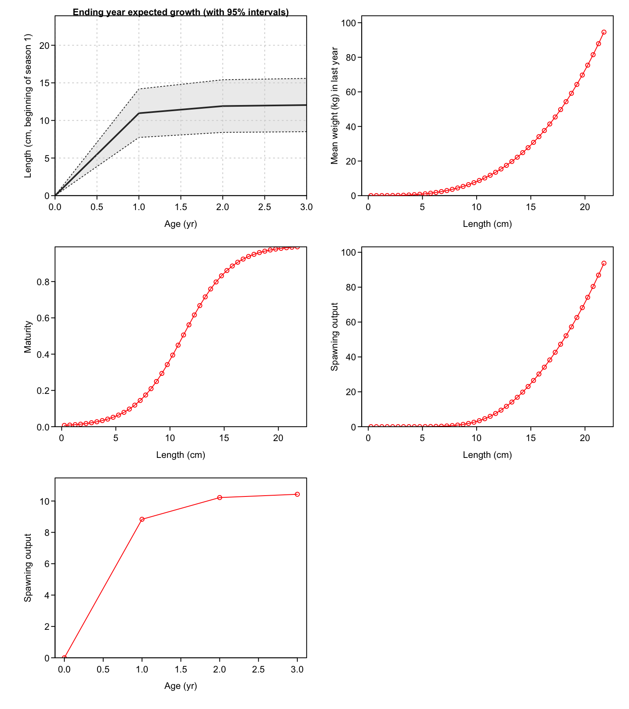
parbio1<-replist$estimated_non_dev_parameters
kbl(parbio1, booktabs = T,position="h!",
caption = "Estimated non dev parameters") %>%
kable_styling("striped",
full_width = FALSE,font_size=12)%>%
scroll_box(width="100%")| Value | Phase | Min | Max | Init | Status | Parm_StDev | Gradient | Pr_type | Prior | Pr_SD | Pr_Like | Afterbound | |
|---|---|---|---|---|---|---|---|---|---|---|---|---|---|
| L_at_Amin_Fem_GP_1 | 5.42163 | 5 | 0.00 | 10.00 | 9.000 | OK | 0.6205470 | -6.0e-07 | No_prior | NA | NA | NA | OK |
| L_at_Amax_Fem_GP_1 | 12.03990 | 5 | 5.00 | 22.00 | 16.000 | OK | 0.2121680 | -8.0e-07 | No_prior | NA | NA | NA | OK |
| VonBert_K_Fem_GP_1 | 2.00000 | 3 | 0.01 | 2.00 | 0.100 | HI | 0.0008549 | -1.0e-07 | No_prior | NA | NA | NA | CHECK |
| CV_young_Fem_GP_1 | 0.15000 | 5 | 0.03 | 0.15 | 0.066 | HI | 0.0001015 | -1.0e-07 | No_prior | NA | NA | NA | CHECK |
| CV_old_Fem_GP_1 | 0.15000 | 5 | 0.03 | 0.15 | 0.066 | HI | 0.0000445 | 0.0e+00 | No_prior | NA | NA | NA | CHECK |
| SR_LN(R0) | 12.74480 | 1 | 5.00 | 20.00 | 13.000 | OK | 0.1804690 | -9.0e-06 | No_prior | NA | NA | NA | OK |
| LnQ_base_PELAGO(2) | 1.99998 | 1 | -3.00 | 2.00 | 0.000 | HI | 0.0364543 | 0.0e+00 | No_prior | NA | NA | NA | CHECK |
| LnQ_base_ECOCADIZ(3) | 1.70672 | 1 | -3.00 | 2.00 | 0.000 | OK | 0.1888190 | -6.0e-07 | No_prior | NA | NA | NA | OK |
| Size_inflection_Fishery(1) | 7.73585 | 2 | -1.00 | 20.00 | 12.000 | OK | 0.7704730 | 1.7e-06 | No_prior | NA | NA | NA | OK |
| Size_95%width_Fishery(1) | 2.37025 | 2 | -1.00 | 20.50 | 18.000 | OK | 0.9360020 | 0.0e+00 | No_prior | NA | NA | NA | OK |
| Size_inflection_PELAGO(2) | 8.00000 | 3 | -3.00 | 8.00 | 6.000 | HI | 0.0022441 | 1.0e-07 | No_prior | NA | NA | NA | CHECK |
| Size_95%width_PELAGO(2) | 3.28308 | 3 | -3.00 | 16.00 | 10.000 | OK | 3.8305500 | 3.0e-07 | No_prior | NA | NA | NA | OK |
| Size_inflection_ECOCADIZ(3) | 10.00000 | 3 | -1.00 | 10.00 | 8.000 | HI | 0.0003255 | 0.0e+00 | No_prior | NA | NA | NA | CHECK |
| Size_95%width_ECOCADIZ(3) | 1.04966 | 3 | -1.00 | 20.50 | 15.000 | OK | 2.0384500 | -3.0e-07 | No_prior | NA | NA | NA | OK |
La distribución de talla a la edad o la edad observada a al edad real se representa como un histograma. Los valores son de las secciones de Report.sso llamadas AGE_LENGTH-KEY y AGE_AGE_KEY.
sspar(mfrow = c(4, 2), plot.cex = 0.5)
SSplotAgeMatrix(replist)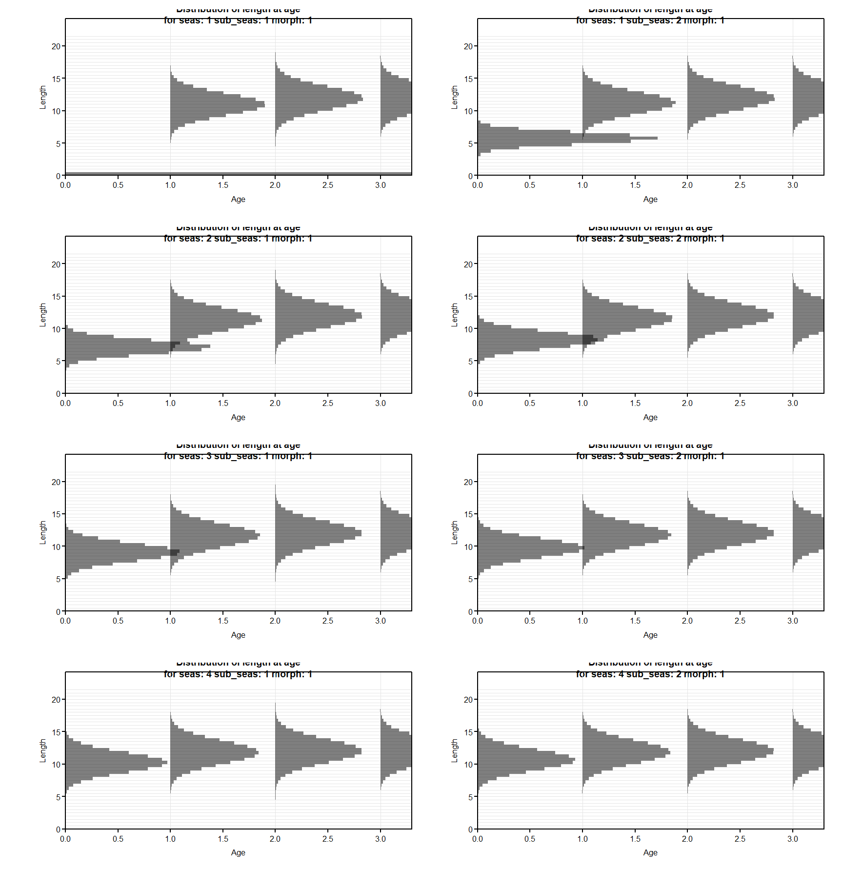
SSplotSelex(replist,subplot =1)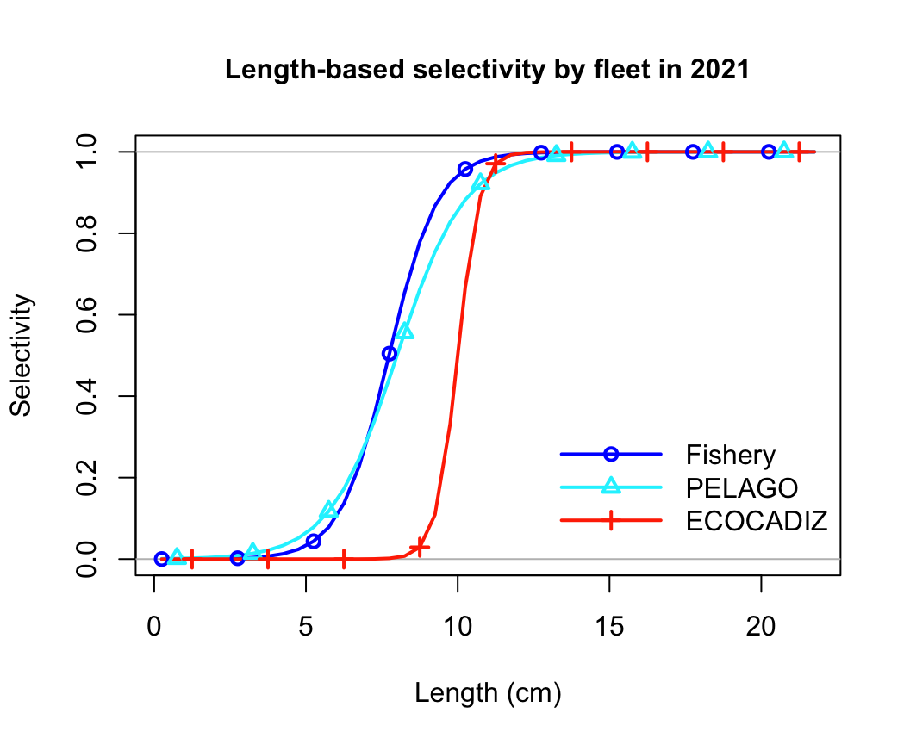
SSplotSelex(replist,subplot =2)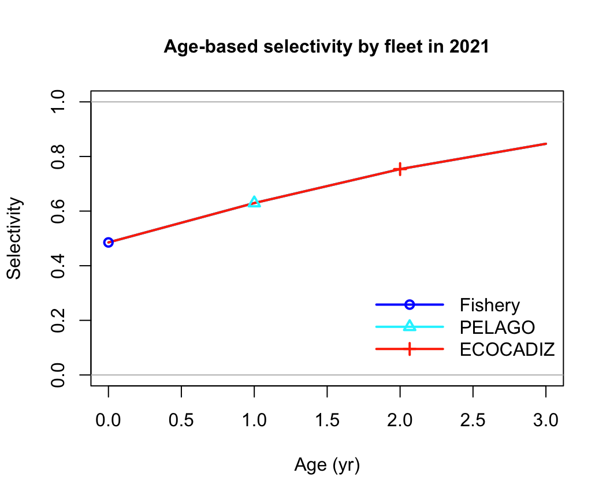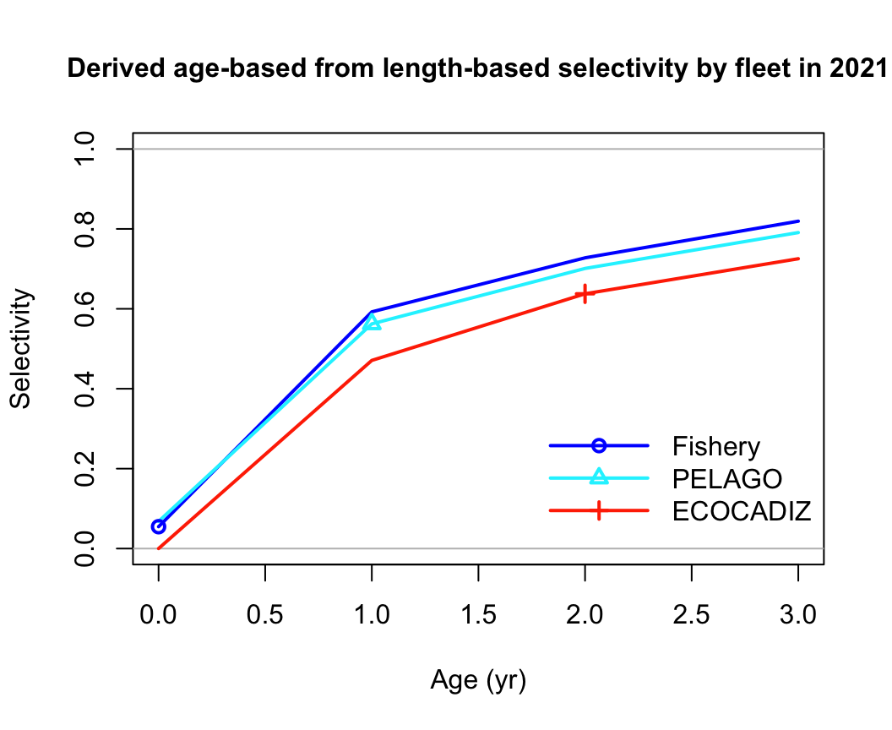
sspar(mfrow = c(4, 2), plot.cex = 0.6)
SSplotTimeseries(replist,subplot =1)
SSplotTimeseries(replist,subplot =3)
SSplotTimeseries(replist,subplot =4)
SSplotTimeseries(replist,subplot =6)
SSplotTimeseries(replist,subplot =7)
SSplotTimeseries(replist,subplot =9)
SSplotTimeseries(replist,subplot =10)
SSplotTimeseries(replist,subplot =11)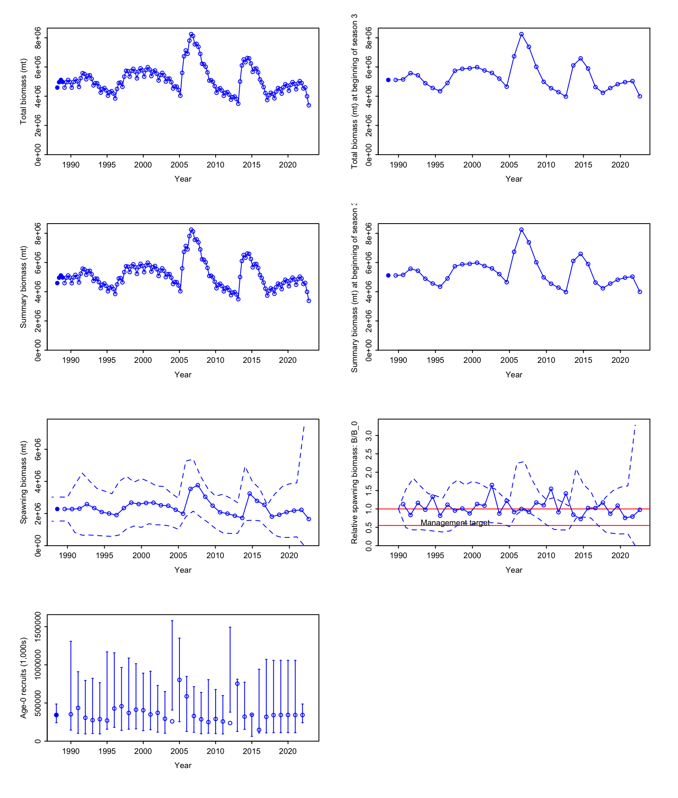
SSplotCatch(replist, subplots =c(2,9, 10))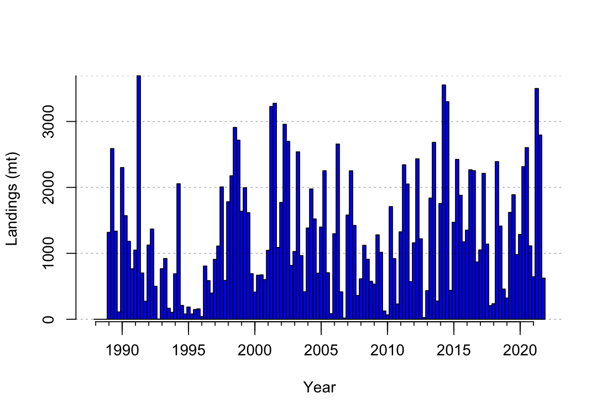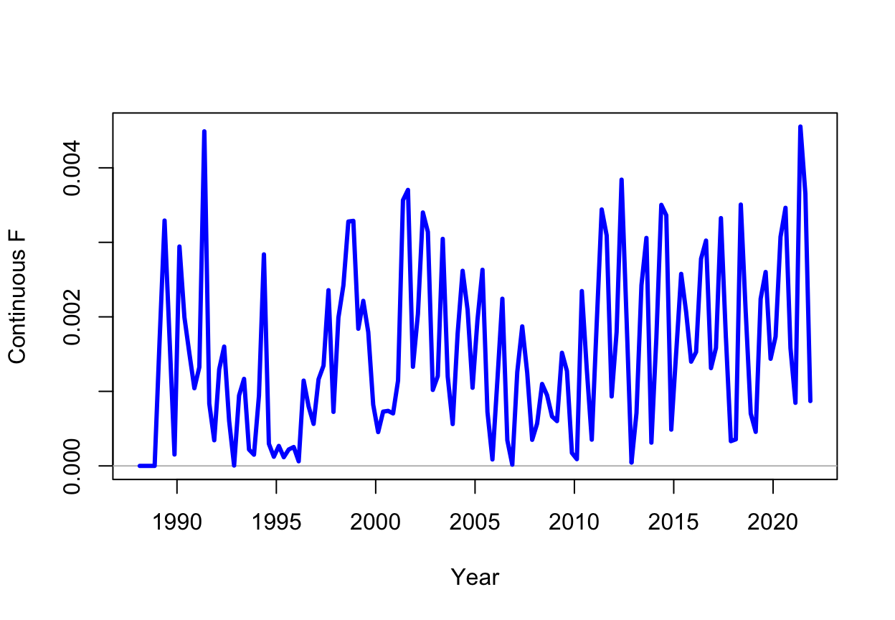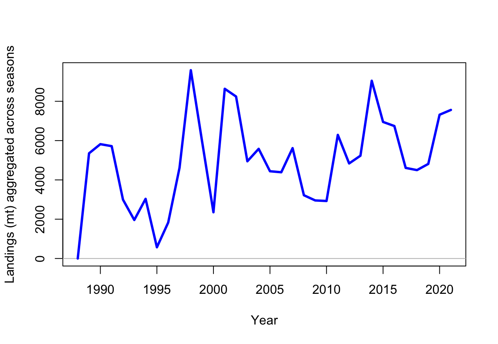
sspar(mfrow = c(2, 2), plot.cex = 0.6)
SSplotIndices(replist, subplots = c(9,2,7))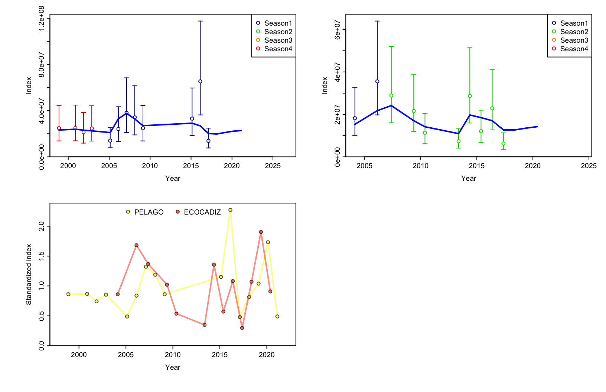
SSplotData(replist, subplot = 1)Datos de entrada al modelo
sspar(mfrow = c(1, 2), plot.cex = 0.8)
SSplotSpawnrecruit(replist,subplot =2:3,legend = T)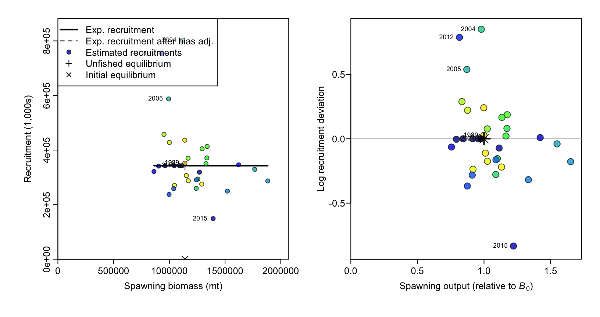